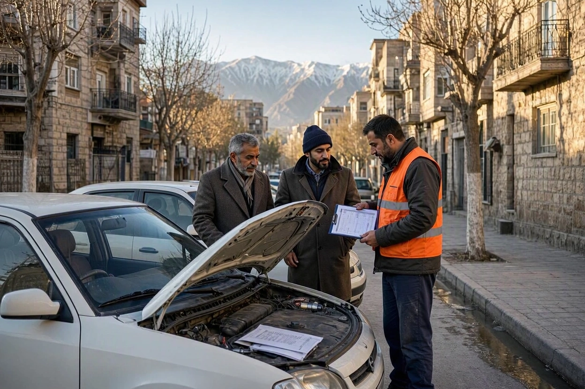
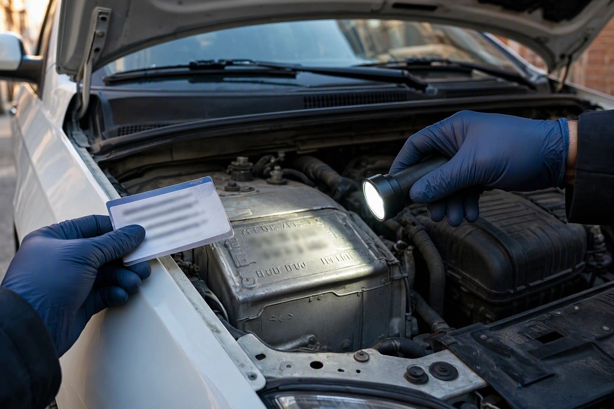
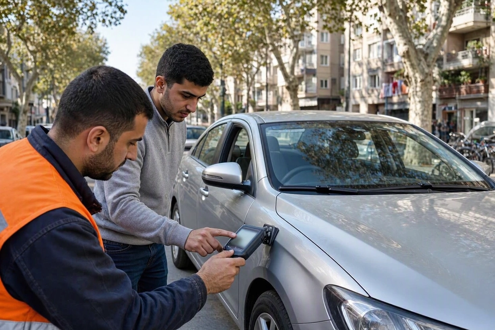
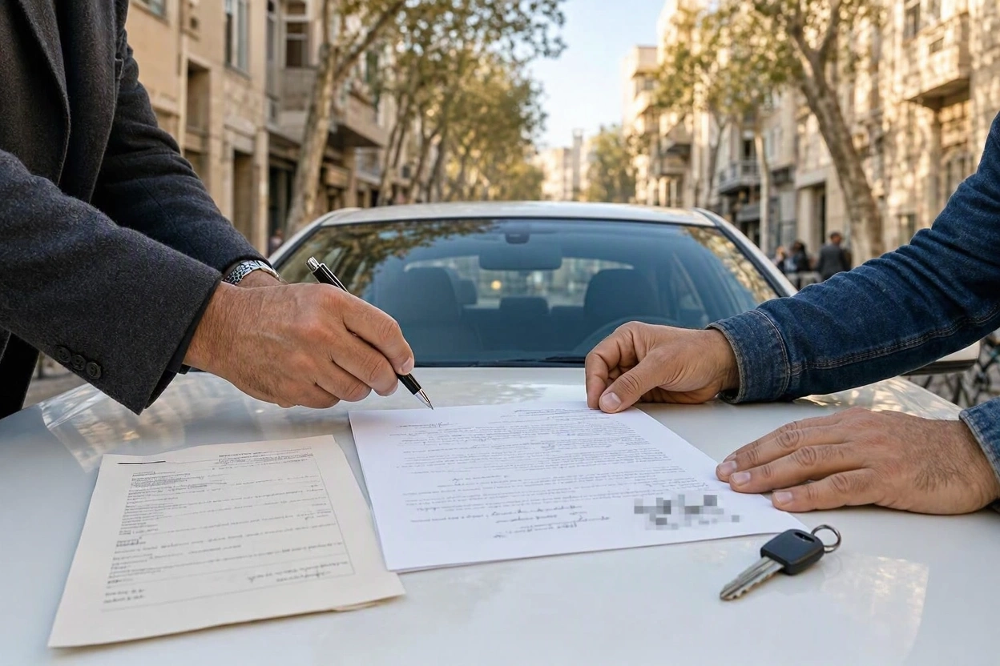

کارشناسی خودرو دست دوم در محل؛ چک لیست طلایی قبل از قولنامه
یک ۲۰۶ تیپ پنج در نارمک پیدا کردهاید. قیمتش کمی پایینتر از بازار است، عکسهای آگهی تمیز است و فروشنده پشت تلفن میگوید «یک نفر دیگر هم قرار است عصر بیاید، اگر میخواهید زودتر بیعانه بدهید». همین یک جمله کافی است تا ترتیب کارها به هم بریزد: اول بیعانه، بعد قولنامه، و آخر سر، اگر وقت شد، کارشناسی.
ترتیب درست دقیقاً برعکس است. ما در کارماچک هر روز کارشناسی خودرو دست دوم در محل انجام میدهیم و دیدهایم که بیشتر ضررها نه به خاطر نبود کارشناسی، بلکه به خاطر کارشناسی در زمان اشتباه پیش میآید. این چکلیست مسیر را از اولین تماس تلفنی تا لحظهی امضای قولنامه، ایستگاه به ایستگاه نشان میدهد.
کارشناسی خودرو دست دوم در محل باید پیش از هر پرداخت و هر امضایی انجام شود. ترتیب طلایی چهار ایستگاه دارد: سؤالهای تلفنی و استعلامها، کارشناسی با موتور سرد و تطبیق مدارک با خودرو، تصمیم بر اساس گزارش کتبی، و در آخر قولنامهای که شماره شاسی و گزارش کارشناسی را بهعنوان پیوست داشته باشد.
خلاصه در یک دقیقه
- هیچ پولی، حتی بیعانهی کم، قبل از دیدن گزارش کارشناسی پرداخت نکنید. بیعانهی پیش از کارشناسی، قدرت چانهزنی شما را از بین میبرد.
- بخشی از غربالگری با چند سؤال تلفنی و استعلام خلافی و سوابق بیمه، پیش از راه افتادن انجام میشود.
- روز کارشناسی، کار شما تطبیق مدارک با خودرو است و کار کارشناس بررسی فنی و بدنه؛ این دو را با هم قاطی نکنید.
- گزارش کارشناسی را به قولنامه پیوست کنید. این کار هم از خریدار محافظت میکند و هم از فروشنده.
- قولنامه بدون شماره شاسی، شماره موتور و کیلومتر روز معامله، یک قولنامهی ناقص است.
چرا ترتیب کارها از خود چک لیست مهم تر است؟
در معاملهی خودرو دستدوم یک نقطهی برگشتناپذیر وجود دارد: لحظهای که پول جابهجا میشود یا قولنامه امضا میشود. هر بررسیای که بعد از این نقطه انجام شود، دیگر ابزار تصمیمگیری نیست؛ فقط ابزار دعوا است.
خریداری که اول بیعانه داده، وقتی گزارش کارشناسی رنگشدگی یا ایراد فنی نشان میدهد، بین دو گزینهی بد گیر میافتد: یا با ایراد کنار بیاید، یا برای پس گرفتن بیعانه وارد بحث شود. همان گزارش اگر یک ساعت زودتر آمده بود، فقط یک برگ برنده در چانهزنی بود.
- ایستگاه اول، تلفن و استعلام:خودروهای مشکوک را پیش از صرف وقت و هزینه حذف کنید.
- ایستگاه دوم، کارشناسی در محل:وضعیت واقعی خودرو و تطابق مدارک با خودرو را مشخص کنید.
- ایستگاه سوم، تصمیم:بر اساس گزارش کتبی تصمیم بگیرید: خرید، چانهزنی یا انصراف.
- ایستگاه چهارم، قولنامه:همهی آنچه دیده و شنیدهاید را روی کاغذ بیاورید و بعد پول بدهید.
ایستگاه اول: پشت تلفن، قبل از راه افتادن
بخش زیادی از غربالگری با یک تماس دهدقیقهای انجام میشود. هدف این تماس پیدا کردن ایراد نیست؛ هدف این است که ببینید فروشنده شفاف جواب میدهد یا نه، و آیا اصلاً ارزش دارد برای این خودرو کارشناسی خودرو در محل هماهنگ کنید.
| سؤال تلفنی | جواب قابل قبول | جواب زنگ خطر |
|---|---|---|
| سند به نام خود شماست؟ | بله، سند و کارت به نام خودم است | «به نام برادرم است» یا «وکالتی خریدهام» بدون وکالتنامهی رسمی معتبر |
| چند دست چرخیده؟ | عدد مشخص، حتی اگر زیاد باشد | «نمیدانم» یا «تازه خریدهام» برای خودرویی که چند ماه بیشتر دستش نبوده |
| رنگ یا تصادف دارد؟ | جواب دقیق با محل و نوع رنگ | «بیرنگ بیرنگ» بدون اجازهی کارشناسی |
| کارشناس مستقل بیاورم مشکلی نیست؟ | بله، هر ساعتی که هماهنگ کنیم | مخالفت یا اصرار به کارشناس آشنای خودش |
| میشود خودرو چند ساعت قبل از بازدید روشن نشود؟ | قبول میکند | بهانهی مداوم یا «ماشین را گرم میکنم که معطل نشوید» |
| سوابق سرویس و دفترچه دارد؟ | دارد یا صادقانه میگوید ندارد | داستانهای متناقض دربارهی تعمیرات |
استعلام هایی که قبل از کارشناسی می شود گرفت
کارشناس وضعیت فنی و بدنه را میبیند، اما وضعیت حقوقی و پروندهی خودرو را نه. این بخش با استعلام روشن میشود و بهتر است پیش از روز کارشناسی یا دستکم پیش از قولنامه انجام شود.
- خلافی و جریمه: از طریق اپلیکیشن «پلیس من» یا سامانههای رسمی پلیس راهور. چون این استعلام به اطلاعات مالک نیاز دارد، از فروشنده بخواهید جلوی شما استعلام بگیرد یا تصویر نتیجه را بفرستد.
- توقیف یا منع نقلوانتقال: خودرویی که توقیف یا در رهن است، حتی اگر از نظر فنی بینقص باشد، قابل انتقال سند نیست. این وضعیت را پیش از هر پرداختی روشن کنید.
- سوابق بیمه شخص ثالث: از طریق سامانهی سنهاب بیمه مرکزی با پلاک و کد ملی بیمهگذار. درصد تخفیف عدم خسارت و تعداد خسارتهای دریافتی، تصویر خوبی از سابقهی تصادف خودرو میدهد.
- سوابق بیمه بدنه: اگر خودرو بیمه بدنه داشته، سابقهی خسارتهای بدنه هم سرنخ مهمی است. این استعلام معمولاً با شماره شاسی و کد ملی مالک انجام میشود، نه فقط با پلاک.
ایستگاه دوم: روز کارشناسی در محل
روز بازدید، دو کار همزمان انجام میشود و بهتر است تقسیم کار روشن باشد. کارشناس روی رنگ، بدنه، شاسی، فنی و دیاگ تمرکز میکند. شما روی مدارک و تطابق آنها با خودرو. اگر خریدار هم بخواهد با چراغ قوه دنبال رنگ بگردد، معمولاً هیچکدام از دو کار کامل انجام نمیشود.
| کار شما | کار کارشناس |
|---|---|
| تطبیق شماره شاسی روی سند و کارت با شمارهی حکشده روی بدنه و پلاک شناسایی | بررسی رنگشدگی، بتونه و تعویض قطعات با ضخامتسنج |
| تطبیق شماره موتور با مدارک | بررسی شاسی، ستونها، سینی جلو و کف صندوق |
| عکس از کیلومترشمار در لحظهی بازدید | دیاگ و بررسی خطاهای ثبتشده و وضعیت آمادگی سیستمها |
| تطبیق رنگ و تیپ ثبتشده در کارت با خودرو | بررسی موتور در حالت سرد، گیربکس، جلوبندی و ترمز |
| دیدن سوئیچ یدک، دفترچه و سوابق سرویس | تست رانندگی و جمعبندی در گزارش کتبی |

برای اینکه کارشناسی خودرو در محل به دقیقترین نتیجه برسد، شرایط بازدید هم مهم است: ساعت روشن روز، موتور سرد و جای پارک با فضای باز اطراف خودرو. جزئیات این آمادهسازی و اینکه کجای این روش به بررسی تکمیلی نیاز دارد را در مطلب محدودیتهای واقعی کارشناسی در محل و راهحل آنها توضیح دادهایم.
کارشناس مستقل را خودتان انتخاب کنید
کارشناس کارماچک با ضخامتسنج، دیاگ و ابزار بررسی شاسی به آدرس خودرو میآید و گزارش کتبی با عکس تحویل میدهد؛ پیش از آنکه بیعانهای پرداخت کرده باشید.
رزرو کارشناسی خودرو در محلایستگاه سوم: بعد از گزارش؛ بخرم، چانه بزنم یا کنار بکشم؟
گزارش کارشناسی جواب «خوب یا بد» نمیدهد؛ تصویری از وضعیت خودرو میدهد که باید آن را به تصمیم تبدیل کنید. راستش را بخواهید، تقریباً هیچ خودروی کارکردهای گزارش بینقص ندارد. سؤال درست این است که کدام ایراد با قیمت جبران میشود و کدام نه.
| یافتهی گزارش | معنای آن برای معامله | اقدام منطقی |
|---|---|---|
| لکهگیری یا رنگ یک قطعهی بیرونی مثل گلگیر یا درب | روی ارزش اثر دارد، اما معمولاً ایمنی را تهدید نمیکند | چانهزنی بر اساس محل و وسعت رنگ |
| تعویض یا ضربهی ستون، سینی جلو یا شاسی | اثر جدی روی ارزش، ایمنی و فروش بعدی | اغلب انصراف، مگر با شناخت کامل از وسعت تعمیر و قیمت متناسب |
| نشتی جزئی، استهلاک جلوبندی یا لنت | هزینهی تعمیر قابل برآورد | هزینهی تعمیر را بپرسید و از قیمت کم کنید |
| نشانهی پاک شدن اخیر حافظهی دیاگ | احتمال پنهان کردن ایراد | بررسی تکمیلی یا شرط کتبی در قولنامه |
| مغایرت شماره شاسی یا موتور با مدارک | مشکل هویتی و حقوقی، نه فنی | معامله نکنید |

اگر گزارش را با دقت نخوانید، ممکن است یک ایراد جدی را با یک نکتهی جزئی یکی بگیرید. روش خواندن بخشبهبخش گزارش و ایرادهایی که دلیل انصراف هستند را در راهنمای خواندن گزارش کارشناسی خودرو آوردهایم. برای تبدیل ایرادها به عدد در چانهزنی هم قیمتگذاری خودرو کمک میکند.
کارماچک یک مجموعهی ارائهدهندهی خدمات کارشناسی خودرو در ایران است و گزارشهایش را برای همین ایستگاه مینویسد: فقط ایراد خودرو را شناسایی نمیکنیم؛ اثر آن روی هزینه تعمیر و ارزش واقعی معامله را هم مشخص میکنیم.
ایستگاه چهارم: ۹ بندی که باید در قولنامه بیاید
قولنامه آخرین جایی است که میتوانید هر آنچه دیدهاید و شنیدهاید را به تعهد تبدیل کنید. نکته مهم اینجاست: گزارش کارشناسی فقط وقتی از شما محافظت میکند که به قولنامه پیوست شده باشد.
- مشخصات کامل خودرو:نوع، تیپ، مدل، رنگ، شماره پلاک، شماره شاسی و شماره موتور، دقیقاً مطابق مدارک.
- کیلومتر روز معامله:عدد کیلومترشمار در همان روز، با همان عکسی که گرفتهاید.
- پیوست گزارش کارشناسی:گزارش با تاریخ، به امضای هر دو طرف، با این مضمون که خریدار خودرو را با وضعیت مندرج در گزارش دیده و پذیرفته است.
- اظهارات فروشنده:جملههایی مثل «شاسی ضربه نخورده»، «موتور باز نشده» یا «کیلومتر دستکاری نشده» که فروشنده پشت تلفن یا حضوری گفته است.
- مبلغ و زمان پرداخت:مبلغ کل، بیعانه، باقیمانده و تاریخ هر پرداخت، به عدد و حروف.
- حساب مقصد:واریز فقط به حساب شخص مالک که نامش در سند آمده است.
- تحویل خودرو و مدارک:تاریخ تحویل، تعهد به تحویل همان خودرو با همان وضعیت، و فهرست مدارک: سند، کارت، بیمهنامه، سوئیچ یدک و دفترچه.
- خلافی و بدهی:تسویهی خلافی و عوارض تا روز تحویل بر عهدهی فروشنده است.
- انتقال سند و شرط فسخ:زمان مراجعه به دفترخانه و تعویض پلاک، و شرایط و جریمهی فسخ برای هر دو طرف.

۶ دام رایج بین کارشناسی تا قولنامه
این دامها در گزارش کارشناسی دیده نمیشوند، چون به رفتار طرف معامله برمیگردند نه به خودرو:
- بیعانه برای «نگه داشتن» خودرو: پرداخت پیش از کارشناسی و قولنامه، رایجترین راه از دست رفتن پول در معاملههای اینترنتی است.
- «مشتری دیگر منتظر است»: فشار زمانی ساختگی برای اینکه کارشناسی را حذف کنید. خودرویی که ارزش خرید دارد، یک روز صبر هم ارزش دارد.
- کارشناس پیشنهادی فروشنده: کارشناس باید فقط به خریدار جواب پس بدهد. کارشناس را خودتان انتخاب کنید و هزینهاش را خودتان بدهید.
- واریز به حساب شخص سوم: «حساب برادرم است» یا «به حساب نمایشگاه بزنید» بدون سند روشن، ریسک جدی است.
- قولنامه بدون شماره شاسی: بدون این شماره، اثبات اینکه خودروی تحویلی همان خودروی کارشناسیشده است سخت میشود.
- تحویل با فاصلهی چندروزه: اگر بین کارشناسی و تحویل فاصله افتاد، روز تحویل با همان عکسها شماره شاسی، کیلومتر و قطعات اصلی مثل لاستیک و باتری را دوباره چک کنید.
چک لیست طلایی در یک نگاه
این فهرست را ذخیره کنید و قبل از هر مرحله، تیک بزنید:
پیش از بازدید
- سند به نام فروشنده است یا وکالت رسمی معتبر دارد.
- فروشنده با کارشناس مستقل و بازدید با موتور سرد موافق است.
- خلافی، توقیف و سوابق بیمه استعلام شده است.
- هیچ مبلغی پرداخت نشده است.
روز کارشناسی
- شماره شاسی و موتور با سند و کارت یکی است.
- از کیلومتر، مدارک و چهار طرف خودرو عکس گرفته شده است.
- گزارش کتبی با عکس و فهرست موارد بررسینشده دریافت شده است.
پیش از امضا
- تصمیم خرید، چانهزنی یا انصراف بر اساس گزارش گرفته شده است.
- ۹ بند ضروری در قولنامه آمده و گزارش کارشناسی پیوست شده است.
- واریز فقط به حساب مالک انجام میشود.
جمع بندی: کارشناسی خودرو دست دوم در محل، قبل از هر امضا
چکلیست طلایی خرید خودرو دستدوم بیش از هر چیز یک ترتیب است: اول تلفن و استعلام، بعد کارشناسی با موتور سرد و تطبیق مدارک، بعد تصمیم بر اساس گزارش، و در آخر قولنامهای که شماره شاسی، کیلومتر و گزارش کارشناسی را در خودش دارد. هر مرحلهای که جابهجا شود، بخشی از قدرت شما در معامله از دست میرود.
اگر خودروی مورد نظرتان را پیدا کردهاید و فروشنده با بازدید مستقل موافق است، کارشناسی خودرو در محل را پیش از هر پرداختی هماهنگ کنید تا قولنامه را با اطلاعات کامل امضا کنید.
قبل از قولنامه، گزارش کارشناسی را در دست داشته باشید
آدرس و ساعت بازدید را مشخص کنید؛ کارشناس کارماچک خودرو را همانجا بررسی میکند و گزارشی تحویل میدهد که میتوانید به قولنامه پیوست کنید.
ثبت درخواست کارشناسی خودرو در محلسؤالات متداول
کارشناسی خودرو دست دوم را قبل از بیعانه انجام دهم یا بعد از آن؟
قبل از بیعانه. بیعانهای که پیش از کارشناسی پرداخت شود، شما را در موقعیتی قرار میدهد که اگر گزارش ایراد نشان دهد، یا باید با ایراد کنار بیایید یا برای پس گرفتن پول بحث کنید. گزارشی که پیش از هر پرداخت گرفته شود، فقط ابزار تصمیم و چانهزنی است.
اگر فروشنده اجازه کارشناسی در محل ندهد چه کنم؟
مخالفت با کارشناس مستقل خودش اطلاعات مهمی دربارهی خودرو است. میتوانید پیشنهاد دهید هزینهی کارشناسی را خودتان بپردازید و ساعت را با برنامهی فروشنده هماهنگ کنید. اگر باز هم مخالفت کرد، خرید بدون کارشناسی ریسکی است که معمولاً ارزشش را ندارد.
گزارش کارشناسی را چطور به قولنامه پیوست کنم؟
نسخهی کتبی گزارش را با تاریخ کارشناسی ضمیمه کنید و هر دو طرف آن را امضا کنند. در متن قولنامه هم بنویسید که خریدار خودرو را با وضعیت مندرج در گزارش کارشناسی پیوست دیده و پذیرفته است. این کار جلوی ادعاهای بعدی هر دو طرف را میگیرد.
استعلام خلافی و توقیف را خودم بگیرم یا فروشنده؟
این استعلامها معمولاً به اطلاعات مالک خودرو نیاز دارند. بهترین راه این است که فروشنده جلوی شما از طریق اپلیکیشن یا سامانهی رسمی استعلام بگیرد و نتیجه را نشان دهد. تسویهی خلافی تا روز تحویل را هم در قولنامه به عهدهی فروشنده بگذارید.
آیا گزارش کارشناسی سابقه تصادف بیمه را هم نشان میدهد؟
نه. کارشناس آثار تصادف روی بدنه و شاسی را میبیند، اما سابقهی خسارتهای بیمه را باید جداگانه از سامانهی سنهاب بیمه مرکزی استعلام کنید. این دو مکمل هم هستند: نبود خسارت بیمه، بیتصادف بودن را ثابت نمیکند و کارشناسی هم پروندهی بیمه را نمیبیند.
بین کارشناسی تا قولنامه چقدر فاصله مجاز است؟
هرچه کمتر بهتر. گزارش وضعیت خودرو را در روز بازدید نشان میدهد. اگر قولنامه یا تحویل چند روز عقب افتاد، روز تحویل با عکسهای روز کارشناسی، شماره شاسی، کیلومتر و قطعات اصلی را دوباره تطبیق دهید و در صورت تردید، بررسی مجدد بخواهید.